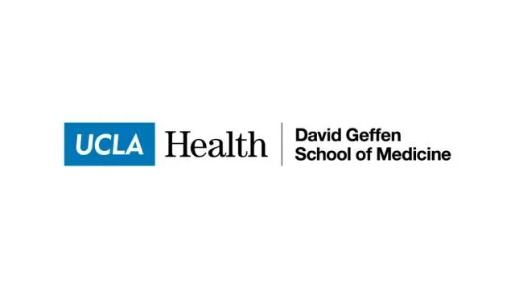
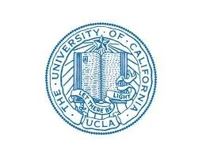

加州大学洛杉矶分校招聘[staff scientists in computational biology]
原文：https://mp.weixin.qq.com/s?__biz=MzAwMzIzOTk5OQ==&mid=2247500800&idx=1&sn=452b29e3b32847da2a634a1bab85dba4&chksm=9b3cbd50ac4b3446d82c30eeae391b640613fd33a7978905e2e99d4d01f3b19d1938a72d677d#rd 合集：求职/求学/招聘
有意者可直接联系pi或微信号：su306314724

 The laboratory of Arjun Deb, at the University of California Los Angeles is seeking staff scientists in computational biology (https://deblab.med.ucla.edu). Candidates will be primarily assigned towards analysis of large genomics and GWAS/metabolomic data sets as well as single cell seq and spatial transcriptomic analysis. Candidates should have demonstratable expertise and publication record in computational biology projects. The University of California is an equal opportunity employer. If interested please send personal statement, curriculum vitae and names of three referees (one must be doctoral supervisor).
The laboratory of Arjun Deb, at the University of California Los Angeles is seeking staff scientists in computational biology (https://deblab.med.ucla.edu). Candidates will be primarily assigned towards analysis of large genomics and GWAS/metabolomic data sets as well as single cell seq and spatial transcriptomic analysis. Candidates should have demonstratable expertise and publication record in computational biology projects. The University of California is an equal opportunity employer. If interested please send personal statement, curriculum vitae and names of three referees (one must be doctoral supervisor).

 往期回顾
往期回顾
歪!?来"Biomamba 生信基地"兼职？************
荷兰马斯特里赫特大学Judith教授招收2023年生物信息学方向博士生求学| 寻找一个生信博导
Ulf’s Computational Biomedicine Lab 博士招聘启示
求学| 寻找一个肠道微生物或系统生物学的博导
南方科技大学第一附属医院刘利平课题组诚聘博士后中南大学湘雅医院李津臣课题组诚聘生物信息学相关多学科交叉人才福州大学医工交叉研究院徐贻佺课题组招生启事
带你们做了那么久的单细胞，也带你们找找工作
浙大医学院生物信息学 博士招生 调剂信息
浙江大学招聘博士后&科研助理
 您点的每个赞，我都认真当成了喜欢
您点的每个赞，我都认真当成了喜欢